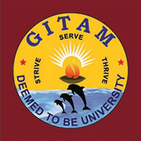

GITAM Institute of Technology (GIT) was established in the year 1980. Over the years the Institute has made its mark in engineering education across the nation. The programs offered by GIT have been accredited by National Board of Accreditation (NBA) three times and it became the first Institute of Andhra Pradesh to be conferred Autonomous status by the UGC in 2003. It became a constituent Institute of GITAM Deemed-to-be University in 2007 and was selected by MHRD in 2011 for TEQIP. The Institute has also been accredited with A grade by TCS.
